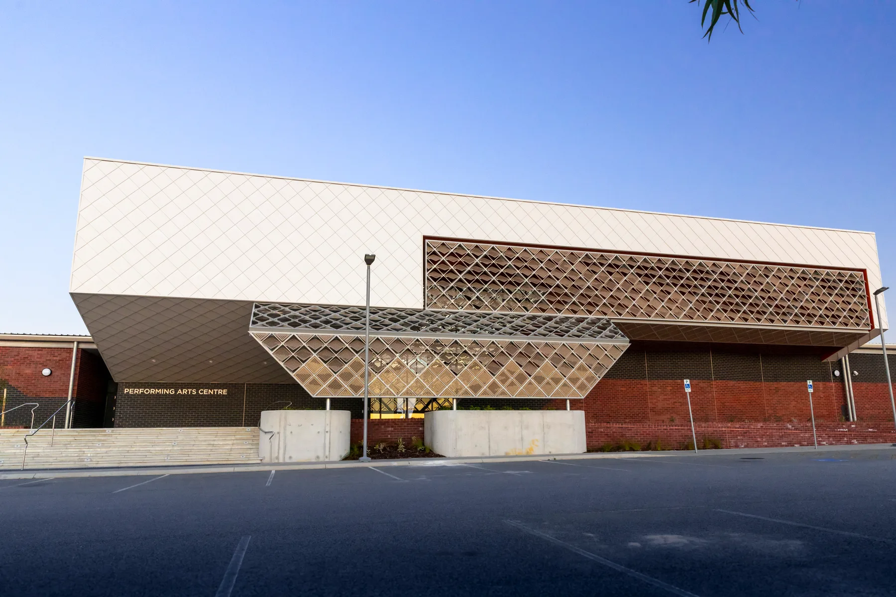
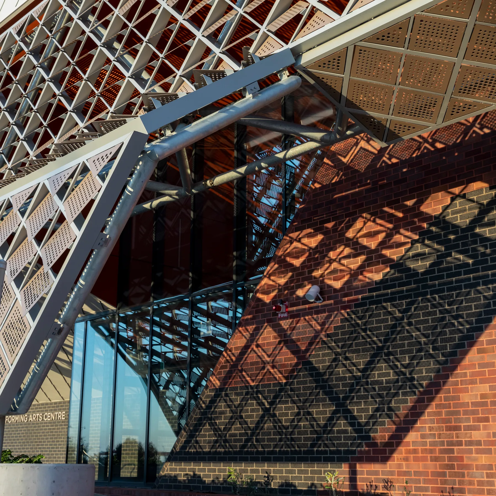
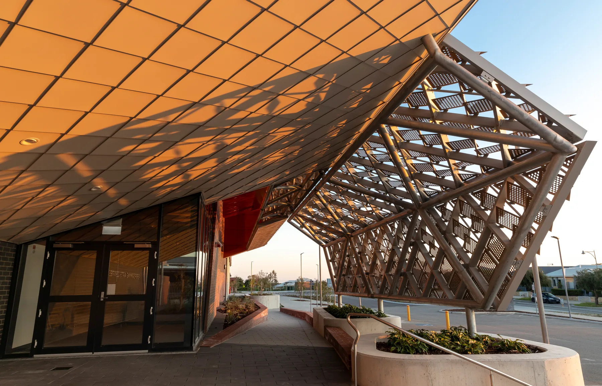
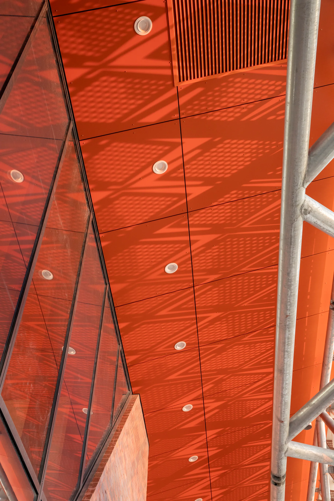
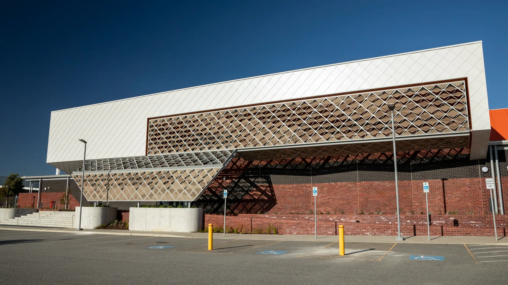
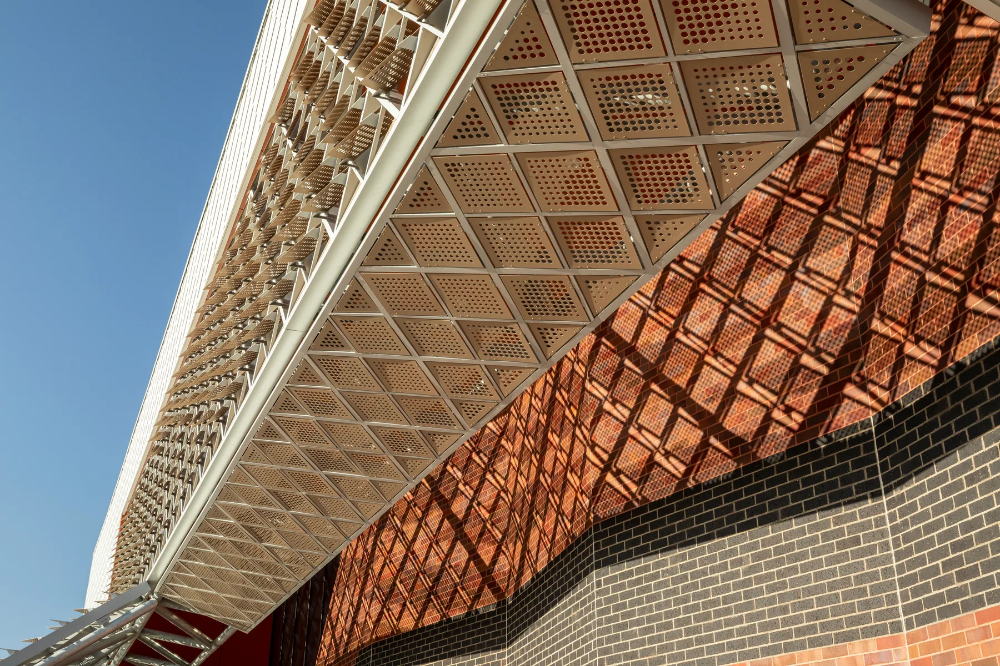
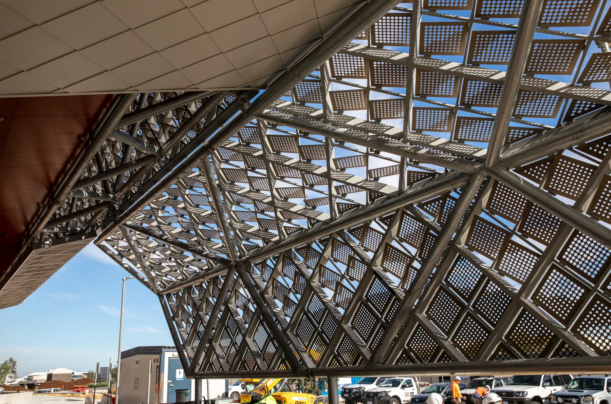
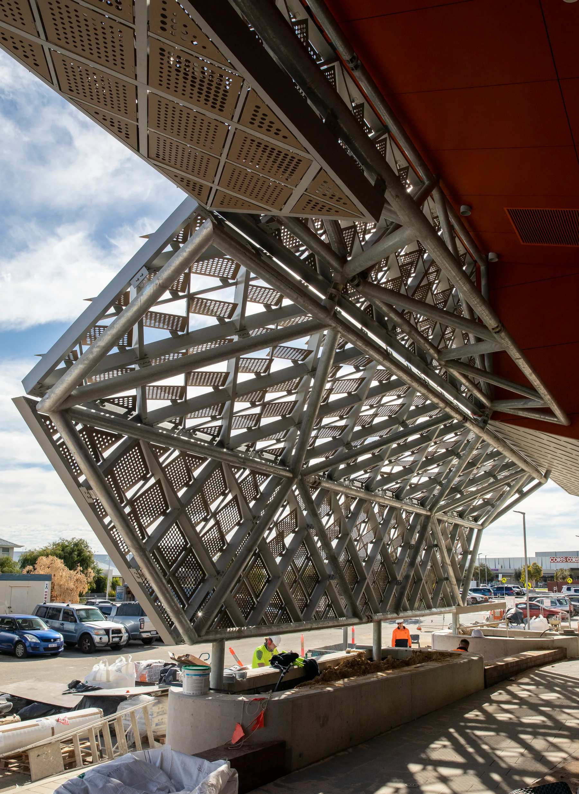
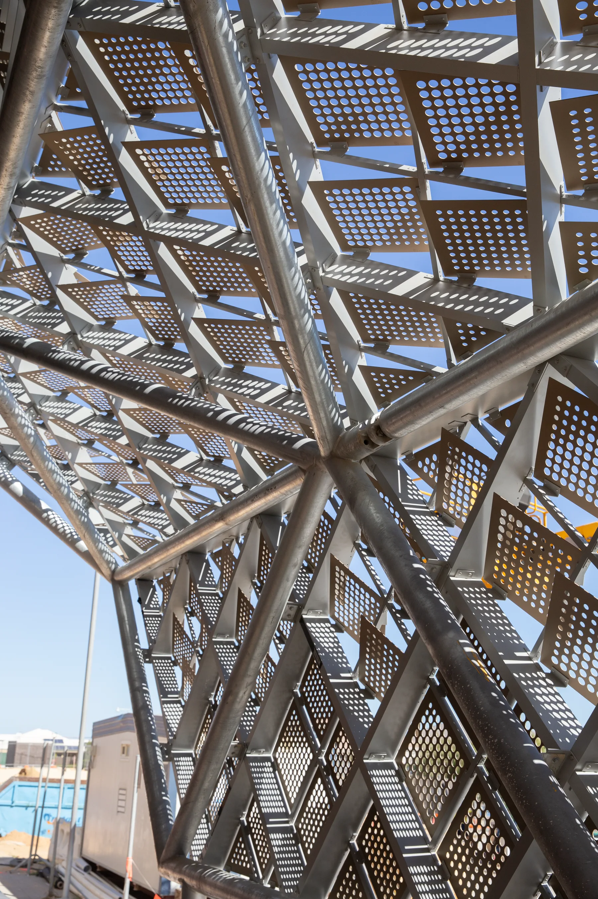

Wind Swept Secondary College, Alkimos
Commissioned by Dept. of Finance
This integrated façade artwork was developed in response to the existing structure and cladding sequence established by the architect. The available façade surface was strategically subdivided into clusters of diamond-shaped panels, many of which tilt away from the building to create moments of openness and visual differentiation. Broad wave patterns govern both the orientation and perforation of the panels. These patterns draw inspiration from the dunes of Alkimos Beach and the continuously shifting formations created as wind moves across the sand.
The artwork consists of 647 aluminium, perferated, powder-coated 430mm square panels connected to subframe via 1300 unique steel angles rationalised into 5 rotations and 14 unique bracket types. The structural system was parametrically optimised to significantly simplifying fabrication, assembly and installation of the artwork.
- Design: Andrei Smolik, Daniel Giuffre, Rick Vermey
- Year completed: 2024
- Client: Dept. of Finance
- Architect: T&Z Architects
- Fabricator: Arcadia
- Contractor: EMCO
- Budget: $320,000
- Size: 650 sqm








